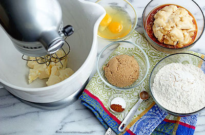

- 1/2 cup (115 grams) unsalted butter,
softened to room temperature
- 1/2 cup (100 grams) granulated sugar
- 1/4 cup (50 grams) brown sugar
- 2 large eggs room temperature
- 2 teaspoons pure vanilla extract
- 2 teaspoons pure vanilla extract
- 2 cups (440 grams) mashed banana,
about 4 large ripe bananas
- 1/2 cup (80 grams) chopped walnuts (optional)
INSTRUCTIONS
1. Preheat oven to 350°F. Spray a 9x5 loaf pan with nonstick cooking spray and set aside.
2. In a large mixing bowl, whisk together the flour, baking powder, baking soda, cinnamon, and salt.
3. In the bowl of a stand mixer fitted with the paddle attachment, or in a large mixing bowl using an electric mixer, mix together the butter, granulated sugar, and brown sugar until light and fluffy (about 4-5 minutes).

4. Mix in the eggs and vanilla, making sure to mix well after each addition. Stop and scrape down the sides of the bowl, then add the mashed banana and mix until fully combined.
5. Add the dry ingredients to the wet ingredients and mix until just combined, making sure not to overmix the batter. Then stir in the chopped walnuts.
6. Scoop the batter into the prepared loaf pan and spread it around into one even layer.
7. Bake at 350°F for 55-65 minutes or until a toothpick inserted into the center comes out clean. Tent with aluminum foil to prevent excess browning if needed.
8. Remove from the oven and allow to cool in the loaf pan for 20 minutes.
9. Carefully remove the bread from the loaf pan and transfer to a wire rack to finish cooling.